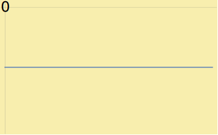

IBM TrueNorth Neuron
Neuron Implementation
- IBM Enhanced the Leaky Integrate and Fire Neuron
- Added stochastic integration:
- Enables probabilistic leak and synapse integration
- Enhanced integration allows for conversion of Caffe models
Neuron Implementation
IBM added 3 new leak modes:|  Negative |
 Divergent |
Convergent |
|---|
Leak modes allow for greater flexibility over LIF model
Able to reproduce Izhikevich's biologically important neuron models
For those interested
Full IBM TrueNorth neuron formula and description available as handoutAlso avalaible at
NeMo Implementation
Event Flow & Processing
Synapse Message Part 1
- Synapses send event messages to the neuron
- Neurons integrate the synapse weight at this point
- Previous voltage is saved in message

Synapse Message Part 2
- Neurons check to see if a "heartbeat" message has been sent
- They then send a heartbeat message to themselves scheduled before the next hardware tick
Heartbeat Message Recevied
Neurons receiving a heartbeat message have either:
- Had synaptic activity this tick
- Have the potential to be self-firing
- Positive leak
- Negative leak with specific reset values
- And More!
- Neurons save current membrane potential in the message